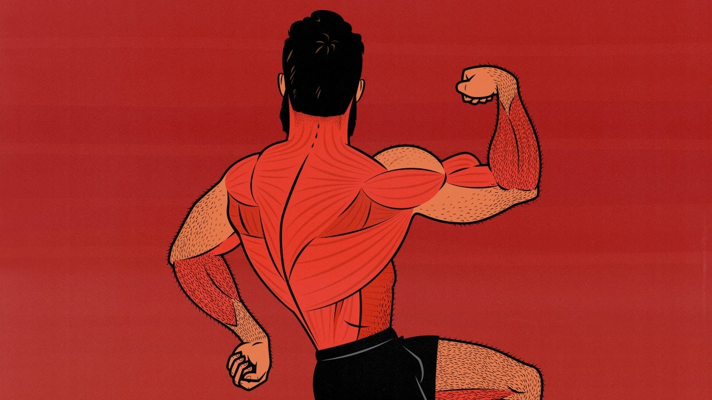

Back-focused Workout Flow

If you want to build that bullet-proof back, you best have these 3 movements in your workout:
- Pull-ups (or any variation of)
- Lat Pulldowns
- Chest-supported row
Workout-flow
- Pull-ups will be your first exercise of the day for good reason; they recruit an overwhelming amount of muscle in performing each rep. If you're a beginner, make sure to utilize knee-support machines or accessories like a resistance band to help you on the concentric (in this case, the pull). If you're an advance lifter, utilize a weight belt to progressively overload!
- After you're done with your pull ups, we can further hit the lats on the Lat Pulldown machine. If you're exhausted from pulling your body weight, drop the weight to something manageable and focus on the mind muscle connection with your lats!
- We'll now focus on back thickness with the Chest-supported row. Make sure to load this movement up a decent amount and focus on squeezing your back while pulling your elbows behind you for the perfect rep.
- TIP: Utilize partial reps AFTER going to failure as it is found that even just the stretch part of the exercise has positive effects to muscle growth.
If you're not feeling like you've got kevlar on your back yet, go bang out some more reps!